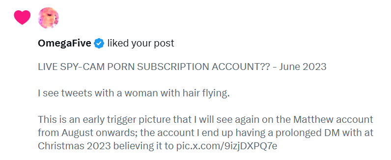
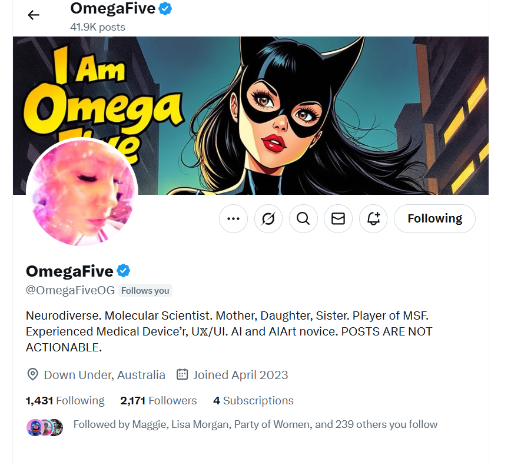
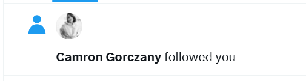

May 2025¶
Transforming Touch intensive in Dublin¶
- I get the car ferry over to Dublin from Liverpool and stay from 30th April to 5th May.
- On the way back, I stay on Anglesey in Wales for one night and learn, for the first time in my life, how to say good morning in Welsh: bore da.
- The intensive is two days (Saturday and Sunday) at the Avila centre and I stay at the Anantara for a few extra days because I want to relax away from the toxicity at home, and I would like to visit Newgrange with the car.
- I’m high throughout this time, obsessing about the trumpet teacher, not feeling particularly relaxed, and feeling exposed.
- I feel like there’s people all around me in the hotel rooms beside mine who know me and are up to something. I can feel it very strongly.
- Since I now know that this is exactly what they do, and have been doing very openly since after July 2025’s poisoning attempt, I can say with certainty that there were mousse agents all over me like scabies at the Anantara.
- At the time, I assume in my ignorance that it is criminal gangs.
- I’m meant to.
Tanya Wilder is in reception¶
- One morning, I see Tanya Wilder in reception.
- She is sitting with a bunch of other Americans as if part of a tour group.
- She looks at me intently but does not say anything.
- I note this.
- She does it in exactly the same way the Naama Levy lookalike looked at me in Bangkok in November 2024, as if they’ve both attended the same formal training course on this.
- Me and mum met Tanya on the eclipse tour of 2006 in Egypt and I told mum I had seen her in Dublin when I got back to London.
- Tanya and I had gone to dinner together in Cairo and shared personal stories on sedated rape; and her experience, she said, had been on a dinner date in Italy.
- I believe that this is where I was first signed up without my knowledge or consent for the CIA’s intuitive program whose main goal was to keep an eye on the criminal gangs of Dénia, some of whom have been a major thorn in their side.
- Mum still has Tanya on her Facebook. Here she is:

- I’m interested that Tanya’s name is Tanya; rather like Tonia. Coincidence? Or have the Americans been after him all along too? If so, why. So interesting. Rich Freed is involved.
- At the Anantara, I wonder if her popping up like this is a sign from the FBI to tell me they’re working on my case, but it’s so top secret they can’t speak to me directly.
- Tanya had told us she lived in a town (did she say Langley, I don’t think it was that but it was somewhere in Virginia) which I immediately linked to the FBI.
- I think I even told my mother this.
- I believe now that the first surreptitious egg-extraction surgery took place at the Anantara.
Prepping putting the blame on Israel
- It never really made any sense to me why she would be there - I don’t think like a spy - until I found out I had been operated on while sedated a bunch of times.
- Tanya was here staring at me to add to the intrigue and conspiracy, just in case it went tits up for them, as it always does, and they could blame Israel, again.
- When Tanya (or whatever your name is) finds out… I expect she’ll do the right thing, like many millions more will too.

- It wasn’t just a warning Tone was it; it was a vision.
40th birthday party¶
- In the spa one day I hear a lot of women speaking Hebrew.
- They are in Dublin celebrating a 40th birthday party.
- I’m amazed because it’s so rare to hear Hebrew spoken in Ireland.
- I don’t think I ever heard it before outside of my Hebrew lesson at Queen’s in Belfast in 2020 before Covid hit.
- I ask them if they’re from Israel, they confirm, and I tell them how nice it is to hear Hebrew in Ireland.
- I had to wonder about these ladies too.
- This was early days in my how-spies-operate intensive training and I was being drugged continuously still so I really had no idea what was going on.
- I felt extremely comforted seeing these women at the hotel, however, and it made me feel much safer against the unease with my neighbors on the 8th floor.
- Also, in August 2026, I realize that all these spy games means there is photographic and video evidence of all evildoing - we’ll see Tanya, and the medical team, and the birthday party - and this is going to be true of every evil mousse-machination I’ve detailed in this police statement.
Seagulls nesting¶
- From my room, I can look out onto the roof of another building.
- Seagulls have made their nests on the air outlets on the roof.
- The female seagulls are sitting snugly in their giant nests, while the male is standing guard, or off to get dinner.
- I find this marvelous, wonderful.
- I’m enthralled by them.
Can I leave my stuff in the centre¶
- I remember asking Yvonne on the first day of the intensive if I could leave my stuff overnight in the Avila centre, and everyone looking at each other - she’s looking at Steve to get confirmation - and then saying no.
- I said, oh has there been some theft here, and they all looked at each other intently again, Yvonne and Steve, one of the others, and she said quietly, yes.
Yvonne tells me Steve is giving her a hard time¶
- Yvonne sits next to me in the circle.
- At some point she complains about Steve giving her a hard time.
- I can see that he is doing this, but I’m not sure what’s going on with them.
- I don’t know how to help her, so I say nothing.
Stopping the intolerable political diatribes at break times¶
- Normally on these courses, it’s apparent that the majority of attendees are politically left-leaning.
- Fine, no issue, except sometimes at break times you have to sit and listen to them going on about the poor immigrants, or whatever.
- And I had just been up to Runcorn with Reform and at least half the people on the bus were immigrants, or the descendants of immigrants, including me!
- So here we are at tea time, and it’s the poor immigrants again, and I’d just had enough of hearing about it so I said something.
- And I was shaking (cos you’re not allowed to have a different view from them, or you can lose your job, get attacked, etc.) and my voice was quivering, but I said something like: oh you mean the thousands of fit young men who hate women coming into the UK every day?
- And I could see faces contorting as I mentioned the obliteration of women’s rights by the left, as if they agreed with me but it was not safe for them to support me or say anything.
- And there was some discussion, and politics was never spoke of again.
- Although, incidentally, in April 2026 in Dublin on the second course where they were all agents and had started to bully me (roasting they called it online - not a word I’d ever use), politics came up quite a lot at tea times.
- One woman even said, forcefully, that she wanted to murder Trump - and I was thinking, that’s a bit strong.. I was shocked actually.. even more so because no-one else at the table seemed to disagree with her.
- So I said something like, wow, people are really divided contentiously aren’t they and went for a walk.
- Then, the very next day, someone actually did try to kill him!
God save the King!¶
- During the course, I start thinking of King Charles, over and over.
- He has become a theme in my mind.
- It is so strange, there’s no reason for it, and I don’t understand it.
- It’s not like some of the other curious ideas I have at all.
- I feel like it’s a foreign idea, so in my attempts to figure it out I wonder if I’m picking it up from someone else.
- I decide that my partner who has a practice in Harley Street must treat the royals - it wouldn’t be unusual for that to happen - and I leave it there.
- Nevertheless, I kept having these bizarre thoughts about the King throughout the course, but there was always something much stronger telling me just to note it and not to worry about it.
- And the ideas stopped once the course had ended.
- Interestingly, I have always had rather good feelings about the King, warm feelings, and when this happened strongly once again - in Dorset in early 2026 - I thought he actually might be coming to visit and I was quite excited about that.
- It all clicked into place in Bali in July 2026 on the CIA psychological-torture intensive where foreign ideas were planted in my mind second by second!
Hearing the bell in her earpiece¶
- A Swedish woman is doing the work on her partner while the rest of us sit in a circle around the table - this is how the intensive course functions, 90% of the two days you’re sitting quietly in a circle watching the others work.
- She has set her timer bell to go off in her earpiece, and I can hear it.
- After she’s finished, Steve wants to know how on earth she managed to keep time without a bell - because he didn’t hear it.
- Six of the others, bar one, say the same thing; yeah, how did you do that?
- She tells us she’s set it to go off in her earpiece.
- I tell everyone I could hear it clearly.
- Another woman, a Polish acupuncturist living in Peterborough, also says she could hear it and she’s surprised about it too because the majority of the room couldn’t hear it.
- It was, however, very audible and I don’t have super hearing.
- Are they all wearing earpieces which would block them from hearing subtones like this while someone is chattering away giving instructions?
- I would never have thought such a thing pre-Bali July 2026.
Adam has pain in his hands¶
- I’ve been suspicious of Adam since the first course he attended.
- He apparently runs windsurfing courses in Sweden: https://www.adamholm.com/. I think he’s probably also an actor by trade.
- I always assumed he was working for the porn gangs and had been sent to spy on me, just like some other course participants I already mentioned.
- My car has been doused with pesticides and this seeps into the plastics and won’t come out.
- Whenever I drive without gloves, I start feeling that bone ache I had in my body when I was wearing pesticide-soaked clothes and shoes, and sleeping under the toxic duvet I brought to London with me from Spain.
- I complain about this online, a lot, so everyone knows.
- Furthermore, I have mentioned this to law-enforcement in multiple communications.
- It’s quite bad after driving from London to Wales and forgetting to wear gloves.
- I often forgot to wear them, which is strange to me writing in safety nearly 18 months later; I believe this is due to constant gaslighting around me and no-one helping me so I just gave up on myself and went along with the liars in certain respects, thankfully not all.
- Close to the end of the two days, I notice Adam is on his phone while we’re talking, and then Steve asks if anyone has any questions and he suddenly puts his hand up and tells Steve he’s having aches in his hands.
- Steve asks him to come over and has a look at them for a few minutes, then Adam sits down again.
Steve says he doesn’t know when the courses are scheduled¶
- I ask Steve on the last day when the next intensive is planned.
- There has maybe been one other intensive I heard about him doing like this in five years of study. It’s not a regular thing at all.
- He says I have no idea, in a manner in which it sounds like he has no input whatsoever into his schedule.
- I say goodbye and tell him I look forward to seeing him in Israel in a couple of weeks.
Constant threats online and in-person¶
- Criminal gangs had been requested by the salmon mousses to harass and upset me online and in-person; and information had been shared with them about what words to use, or what actions to perform so that I would continue to think I was being targeted by criminal gangs alone, and never suspect international security services which included my trauma therapy group.
Are you Welsh?¶
- When I get back to London from my trip to Ireland, I write to Ana Requena, the violin teacher at the conservatory.
- The email is from my
[email protected]account which was shut down in January 2026 when I returned to the UK from abroad, which made me suspect a hack by North London’s finest yet again, with British mousse consent, and was meant to. - I can see why the gangs might want to protect their interests at the music school; fish in a barrel.
- I write to Ana quite frequently, just for fun really.
- I start the email with a greeting in Welsh: bore da.
- I have never ever done that before in my life.
- I do that because I have just returned from Ireland, and on the way back I stayed in Wales one night, and that’s how they all said good morning to me, bore da.
- Later that day, I take my dad to East Finchley library.
- As we arrive at the library, we see an extremely weird guy sitting outside. He’s old and has an orange old bashed-up car, wild hair, trampy clothes, and he looks very dodgy indeed.
- The minute I open the door of my car, he jumps up and starts saying to me, “Oh, are you Welsh, are you Welsh”.
- I do not feel safe in North London!
Dancing man¶
- As I pull into my road in the car late one evening, a man suddenly jumps into the middle of the road.
- He is wearing black headphones like the ones I used to have, until they went missing in Samui, and he is dancing exactly like I did around my room when I was being drugged and hacked in Spain and France.
- He grins at me wildly and he doesn’t move so I have to slow down.
- He side steps away, grinning and dancing.
- He lives at the bottom of the road (or did at the time), and I saw him at a later time being an apparently normal person.
- I’d put money on him being a criminal porn subscriber, and therefore at the porn-gang’s beck-and-call on request from the mousses.
Tricking me into believing criminal gangs are the only ones stalking and hacking me is still working¶
- As I undertake a first laborious and extremely triggering copy edit, I post new content describing stalker accounts that may have live spy-cam-porn subscriptions to my home in Spain, such as the Matthew account from summer 2023.
- It appears that a trigger image - the hair flowing in the wind - was set up early on for me to recognize the Matthew account as significant later on.
- I wonder if this is Lorraine Blackbourn’s hair from the torture porn they made of her.
- A fake account I’ve seen before in similar circumstances likes my tweet.

- Note the message about “POSTS ARE NOT ACTIONABLE”.

- I always felt that this was saying, we can do whatever we like, we don’t care, but were they worried just a little?
- They might be if it is Lorraine’s hair and we can match it to the footage.
Please note
- Only about 1% of these interactions with hackers and stalkers that I was dealing with every day for years get into the book.
Boil porn?¶
- I have suffered from boils in my genital and anal region since 2006.
- I believe it is my body’s alarm system and they emerge after sedated sexual abuse.
- My belief is they are well-known as part of my porn-circuit stardom too.
- One morning, I notice a massive boil in my groin and it has a lot of puss.
- Obviously when I’m examining it, I am in a very private state of undress.
- I looked at it in my bedroom, and in the bathroom too.
- Afterwards, I go downstairs and open my laptop.
- On my Facebook, an account with an extremely specific name has liked my post from the night before.

- “Bad boil a-knock-out”?
- Does this mean my home in London N2 has somehow also been fitted with spy-cams? If so, since when and by whom?
- Perhaps the man my mother employed to fit the stair lifts did it in November 2024.
- At the same time, a fake account follows me on my
@jackchardwoodaccount. The name is interesting and sounds a bit like “camera on gawk zany”.

- Bear in mind I have no activity on this account at all anymore and the last interaction on here was over 40 days ago.
- I still can’t figure out what the purpose behind all this online harassment is, but then again I expect no-one realized quite how robust I am, and how other people’s infantile behavior really has no effect on me.
- I’m with dad in the kitchen and I’m telling him about all this.
- I say the words, boil porn.
- He laughs. It’s not funny.
Meeting Chris & Desa before I fly to Israel¶
- I meet old friends Chris and Desa Ludwick who live in Stevenage near Luton airport.
- I was in the N8 band with Chris Ludwick in 1990 and we’ve been great friends ever since.
- For a long time, they were the only friends I had in the world.
- I’m staying at a hotel in Luton the night before I fly out because the flight is so early.
- We meet for dinner, drinks, a chat and a walk in the grounds of the hotel.
- Desa does her usual thing, jokingly telling us she thinks Chris is a psychopath; she always does that.
- No, he is a psychopath, she’ll emphasize with a chuckle, and then, aren’t you Chris? directly to him.
- He never says anything when she does this.
- It may be a case of taking one to know one.
- Here’s Desa knowing she’s busted - she knew a while back I guess.
- In fact, I always found Desa rather unpleasant because of the way she talks to Chris; putting him down all the time.
- And Chris is my friend, so I don’t like it.
- I explain all this over dinner this evening because it all comes up again - Desa explaining how much she likes Matthew Copeland.
- Some backstory required.
- Early on in their relationship, I tell Matthew Copeland that I don’t really like Desa very much and I tell him why - she’s always putting Chris down.
- We all go to dinner one time, the four of us. I’m guessing this is 2007 when I visit Matthew, but it could have been a lot earlier. They weren’t yet married at the time so it may have even been around 2002.
- We have dinner near the old snooker club (or maybe in a restaurant that replaced the snooker club) in Tottenham Lane opposite the YMCA.
- We’re having dinner, and Matthew declares: Kate doesn’t like you, to Desa.
- I’m horrified. Why would he do such a thing. He’s such a brute.
- Since then she always brings this story up - I guess it’s a giggle for her - I’m embarrassed and I’m reminded how much of a nightmare Matthew always was.
- Desa always says how much she likes Matthew.
- He certainly gave her a good reason for her very obvious dislike of me, which I never really figured out properly.
- So, it comes up again in Luton, and I explain, annoyed, as if I have to, why I don’t like people who insult my friends, and that she should be happy that Chris has friends who will defend him this way.
- She says nothing.
- I can’t figure her out.
- Another thing she said to me on that day was, “you saved my life” - apparently with regards to a weekend in Scarborough I went on with them all in 2019.
- I ask her why she says that.
- She doesn’t answer.
- She also gives me a gift from the second-hand shop she works at that evening; a tiny cloth money purse - I wonder if it had a tracking device from Adams inside - which I left at the hotel.
- As she’s giving it to me, and I accept it and tell her she really shouldn’t have, she looks over at Chris and makes a face as if to say, see? she’s taking it, a communication that was totally inexplicable to me at the time.
- I just assume she still hates me, like she always has, and is doing weird things because of her hatred.
- One time I was suspicious she was poisoning Chris. He became extremely ill inexplicably, A&E ill, and nearly died. It may have happened twice. He got some weird diagnosis and it never happened again. She was that mean to him all the time, I did wonder and I think we have to probably.
- I think she even said something like: he won’t die! and then cackled as if it was a joke, her compulsive tell-tale tic.
- Chris Ludwick surviving poisoning would certainly be a surprise!
- The Lord does roll in mysterious ways though.
Des and Nikki¶
- We talk about Des and Nikki too.
- Des was Chris Ludwick’s great friend from school and Nikki was his wife.
- They lived in Woodgreen and were both black taxi drivers.
- Anyway, all a bit of a tragedy, they did a lot of drugs over the years, and Nikki found out she had breast cancer, and not thinking clearly they both decided they’d kill themselves in South America.
- So they went to Chile, went out into the desert, and Des chickened out at the last minute but Nikki died.
- So he ended up in prison in Lima for murdering his wife.
- And I had started to wonder if Des knew what had happened to me with Winston May through friends of his (no idea about the wider story at the time).
- The last time I saw Des, at Chris and Desa’s wedding, he was ashamed and could not look me in the eye.
- I had just remembered one instance of gang rape in Tottenham in 1989 (so it was probably around 2007 or 2008), and I had told everyone about that, so it occurred to me by his reaction to me that he heard my story from Chris and knew some of the men involved and was ashamed by them.
- I guess he knew about everything, in fact, like they all did.
- A rare declaration of shame is something unique in this story, isn’t it.
- He’d be good to talk to, if you haven’t already.
When they were dating¶
- Chris met Desa online.
- He had previously been honey-trapped by a woman online from America who never sent him a photo but he was ready to fly out to Florida to see her.
- I know this because it was all going on when I visited him one weekend in Stevenage and we went out clubbing with one of his local mates.
- He didn’t have a photo of her to show me, and I even spoke to her online and thought it was all very suspicious.
- So I wasn’t surprised it all went tits up for him.
- So then he meets Desa. And I’m talking to him about her, and he says the only thing he doesn’t like about her is that she’s overweight, and he doesn’t like fat women, and he’s demanded that she lose weight for him.
- And I’m pretty horrified he would be as ignorant as this, so I automatically quite like Desa before I even met her.
- When I do meet her I’m amazed because she is obese; so I think Chris must have done the right thing and got out of his ignorance about women’s bodies.
Sedated-rape participating men leave themselves open to scamming and blackmail and worse¶
- I’ll just leave that there with no further explanation.
- While remembering my poor brother’s experience at the same time.
Anthony Pussycat¶
- A cat comes round to visit 31 sometimes.
- He likes me and I like him back.
- He’s wild and untamed, however, and terribly fierce.
- Nevertheless, we love each other, and I decide to call him Anthony.
- Sometimes, it seems like he’s very protective over me.
- He’s always chasing the other cats out of the garden, glancing at me as he does, and some nights I can hear him howling as if his wee heart is in torment, poor soul.
- I think his owner must have died, or something like that, and he’s heart broken.
- One morning he comes to see me, and we’re talking in the front, and an agent on a bike comes by, and he sees her and immediately starts chasing her down the road, angrily. It’s very funny.
- Other times, he’s soft and sweet and wants cuddles.
- One time, I’m giving him cuddles and he’s so happy and delighted - he’s sitting in my lap in the garden - and it’s a bit cold and starts to rain, but Anthony is not going anywhere.
- He gets terribly cross with me when I say it’s time to go inside, and he can bite too and viciously.
- So we’re dancing around the garden a bit while I’m trying to get away. He is funny.
- He always wants to come inside the house but no-else is allowing it.
- Another day, he decides he’s going to get into the house from an upstairs window, so off he goes, along the fence and onto the roof, and he’s making sure I see him doing it too.
- I’d certainly let him in and make him a nice warm bed, and try not to get bitten too much :)
Israel TT¶
- It’s module two of the Transforming Touch course in Jerusalem, Israel.
- I’m assisting Steve, along with Mrs Wasserman from Brooklyn.
- Steve and I are staying in the same hotel just inside Jaffa Gate in the Old City.
Roisin¶
- On the first morning at breakfast, Steve shares some sensitive information with me.
- He wants to know what I would do in his position.
- He tells me that Roisin (a course participant and assistant) fell in love with another course attendee and there was something contentious about the affair - details of which I don’t remember - but regardless such relationships are forbidden.
- I tell Steve that I would find a way to reconcile everyone.
- Oh, you’re kind, he says a little surprised.
- He then tells me they already decided to fire her, and this has already happened, and he’s now got Roisin on WhatsApp giving him a hard time constantly, lying about stuff, and it all sounds a bit fraught.
- I’m a little surprised to be honest.
- I knew Roisin from the first course I attended in Cork in February 2020.
- I had no issue with Roisin at all but I did notice her energetic boundaries were miniscule, I could practically mind-read with her.
- She had expressed a desire to move to Spain with her husband one time, and I told her not to, that it was a bad idea as it is dangerous for foreign women and children with porn-gangs now operating freely in schools.
- I had written to her and Yvonne too, a couple of times I was in a panic expecting to be murdered at any moment, explaining that I was being drugged and poisoned by criminal gangs in Dénia, Spain who were murdering women.
- I think Roisin was a genuine tax-paying civilian - i.e. non-spy but super intuitive - and when Steve brought up Kathleen Love at lunch the next day - an old assistant he was apparently having a romantic relationship with - I did feel that sacking Roisin was hypocritical of him.
- And today, as I write this section, I have to wonder why he needed me to know about it.
Steve gets upset with me¶
- On the second morning at breakfast, Steve brings up what I had said in Dublin just a few weeks before.
- He wants me to clarify on trans.
- I say transvestitism is a fetish.
- He’s speechless with rage, and says what about trans men but it’s such a huge topic and he’s furious already so we don’t speak about it again.
- But he remains angry with me, and he snipes at me all day.
- At lunch he says something I find quite threatening about Kathleen Love, a woman who used to assist Steve; that she’s disappeared, and he thinks she’s dead.
- He gives me this information utterly non-contextually outside of being angry with me; i.e. no run up, and no further thoughts once said.
- At the end of the day, Mrs Wasserman, Steve and I are walking back towards the hotel and he says something political again, and I say something back.. maybe about suicidal empathy, not sure.. and he goes ballistic and storms off.
- Mrs Wasserman and I are dumbfounded!
Mrs Wasserman puts up her hands and tells me to stop talking¶
- So Mrs Wasserman and I are sitting next to the Spanish house, trying to figure out what happened to Steve.
- I tell her what happened at breakfast, and I explain that I am indeed worried about people who think that sterilizing children is OK, and how they might be working with children.
- I tell her I’m worried about Steve getting in trouble because there’s always a time limit on child abuse.
- She doesn’t disagree.
- In context with our conversation, I start to tell her about the unresolved horrors that I’m living with day to day; about how I fought the Spanish porn-gangs, how they’ve set up porn studios in schools in Spain, etc,
- And she shouts STOP! and puts her hand up.
- “Don’t speak!”, she orders.
- I don’t understand her reaction but don’t say anything.
- So we’re talking again about Steve and what’s happened, and I have to explain some of the things that have been going on again, and she reacts in exactly the same way.
- She says: because of the work we’re doing, I’m very sensitive, and it’s too much… I wasn’t able to tell her anything much at all, did she know already what I was about to say?
- So I sigh - I’m used to a bizarre indifference to absolute horror - and instead I try to tell her what I want to say another way without provoking alarm.
- So I tell her that “because of the things that have been happening to me over the last few years”, without giving any examples, “I’m extremely confident about the future and doing something about the child abuse epidemic”.
- Mrs Wasserman tells me she’s going to speak to Steve.
- Back at my hotel, I’m online with the hackers and I ask them what happened to Kathleen Love.
- I get information suggesting she’s living in her van, and she had a violent boyfriend.
- I start to wonder if Steve might have been her violent boyfriend.
Steve’s suddenly inexplicably OK¶
- The next time I see Steve, it’s like nothing happened.
- He’s completely fine and doesn’t mention anything about the matter ever again.
- And he stops swiping at me too.
- When I see Mrs Wasserman again, I ask her what she said to him.
- She said she didn’t need to say anything to him, he was just OK when she spoke to him again.
- She said she had no idea why or how.
- It was unusual.
- Did my hackers, Americans obviously - I did think they were Israeli for a long time, although I expect everyone was listening in anyhow - have a word with him later on telling him he needs to be nice to me as they’re planning a relationship between us and I’m going to start going off him.
Alma¶
- The following day, at lunch, I’m chatting in the kitchen with a woman called Alma.
- She asks me about my life.
- I tell her what’s been going on for me.
- She is utterly horrified, I see tears in her eyes.
- She’s determined to help me, you must be able to do something, she says.
- She’s really upset.
- I’m amazed, because this is the first time ANYONE! has reacted normally to what’s been going on for me.
- I’m surrounded by totally unhelpful people, all the time, and it was somewhat inexplicable to me until I realized they are either spies instructed to not care for sinister reasons, or are involved somehow and hiding something.
- Her reaction is so powerful, and so healing, it prompts me to write again to the police and the Baroness when I’m on detox in a few weeks time in Devon.
- The second time someone reacts normally to my experiences is nearly a year later, in April 2026, on another TT course I’m attending as a student in Dublin.
- This is really interesting because this lady was also a spy, and yet they allowed her to do TT shares with me online, so they must have realized by then how damning their indifference has been.
- There has not yet been a third time.
Alma goes upstairs¶
- Alma is so upset by what I told her that she takes time out from the afternoon practical sessions and goes upstairs.
- Mrs Wasserman asks me where Alma is.
- I tell her that I told her my story after she had asked about my life, and it had upset her so much she didn’t want to practice.
- Mrs Wasserman goes upstairs and sits with Alma.
Alma is crying¶
- At the end of the day, Alma is crying and being consoled by one of the other women.
- I’m sitting with them at the table but I don’t know or ask what’s going on.
- Later, when everyone has left, Steve tells me they were doing it for him, to make him think something or other.
- It sounded a bit paranoid but I also wondered at the time if this meant he’s surrounded by unhelpful spies all the time, just like I am.
- Today, I wonder if while they were upstairs Mrs Wasserman told Alma something that upset her even more than our conversation at lunch.
Steve falls¶
- One night, Steve and I are out walking in Jerusalem, heading for the Wall.
- Steve says, come this way, and starts heading towards New Gate to enter the Old City that way instead of Jaffa Gate.
- At that moment, a cockroach starts running around my feet in an unusual way.
- The way the cockroach is running around my feet - it seems to be trying to push me back somehow - makes me think that we should not go in the New Gate way.
- I tell Steve that I think we should go in via Jaffa Gate instead.
- He says, no, no, it’s fine, let’s go to New Gate.
- The cockroach is still running around my feet, I’m not kidding it was very peculiar.
- I tell Steve I think the cockroach is telling me we shouldn’t go that way.
- He says don’t be silly or something like that so off we go.
- We enter the city at New Gate and we’re walking through the narrow streets towards the Kotel and at one point Steve slips and falls.
- I’m horrified, it’s a hard fall, and I race over to see if he needs help.
- He doesn’t want help, he doesn’t want to be touched.
- We’re both upset.
- He gets up and we carry on as if none of it happened.
Mrs Wasserman is the Rebbe’s niece¶
- Steve and I are at dinner in Mamilla one evening with Mrs Wasserman.
- Over dinner they start talking about Kabbalah, and the Chabad movement - I’m actually counting the omer at that time using the Chabad website to help me.
- Steve seems to only know about the Kabbalah from Madonna.
- I tell them I had written to the Rebbe twice, probably in 2012 sometime.
- Mrs Wasserman tell us she’s his niece.
- I gasp!
- I’m very impressed.
- When Steve and I are talking later on about these things, he tells me that yeah, Mrs Wasserman is Jewish royalty.
Fertility and pregnancy¶
- A theme running throughout the course was fertility and pregnancy; we even had a nearly new born with us, Ruth.
- She was gorgeous, her mother was older and single and very inspiring.
- Another woman was desperate to get pregnant, and struggling with that - was she hoping to have an egg of mine too? Her husband did not appear to be her husband when she introduced Steve and I to him.
A curious moment
- This woman had asked Steve for some extra help about not being able to get pregnant.
- She stayed back one evening after everyone had gone and for over an hour Steve gave her a personal session, with Mrs Wasserman standing by.
- Mrs Wasserman shut me out of the house while it was going on - as in I was standing at the front door and she shut it on me.
- I was upset by that.
- And then I heard Steve say from inside, is that Katharine?, to Mrs Wasserman while I was standing at the door wondering what to do, and then, of course KATHARINE (emphasized) can be here.
- Was she hoping to add herself to the list of potential surrogates given already successful pregnancies from my eggs?
- As well as all this, I was picking up strong signals about pregnancy from Mrs Wasserman particularly - but also from Steve and Mrs Wasserman’s nephew Jonathan.
- Steve kept telling me how Jonathan has eight children; eight Katharine, eight!.
- It was very clear the idea was an assisted pregnancy, mine specifically, and I started thinking cool, I could get pregnant and have children at my ripe old age, and how miraculous and wonderful that would be!
- The thought of surrogacy never crossed my mind while all this was being suggested to me.
- One night at the Wall, Mrs Wasserman asks me what I think of Jonathan her nephew.
- I say I think he’s very nice.
- She stops, then adds quickly that his wife is very nice too.
- I say I’m sure she is.
- And Mrs Wasserman weeps.
- I wonder if Mrs Wasserman realizes they’ve not been given the whole story by the CIA, or is it guilt when she realizes I’d be more than amenable to having whatever conversation about my eggs they’ve been implying all day every day.
- I read all this as “when the criminal investigation is over”, and everyone can speak plainly, I might consider having babies and perhaps Jonathan could be a sperm donor, and I was not at all against the idea.
- All of this was hints and suggestions, and was surprising enough that I really didn’t fully understand it, so I just watched.
- Had they already got a viable pregnancy going from one of my eggs they extracted in Dublin at the Anantara?
- Did Mrs Wasserman’s people find out about it and want in?
- Had Steve already fathered a baby of mine?
- Incidentally, when I got back to London I spoke often to my parents about wanting a child because of all this, and how in Israel you can do it on the national health right up until you’re 58 - I had found this out on the course too, another reason the very last thing I imagined was thievery.
- Dad said: yes, you should get a pup!
- Nice man.
Ruth¶
- I believe today (20th September 2026) that the baby Ruth came from one of my stolen eggs.
- This means I was suffering criminal egg-extraction surgery way longer than I had considered.
- In fact, this means, that at the same time I was being sedated and raped by my colleagues and managers and Elon Musk and his mates in Bali, they were also performing clandestine surgeries on me to extract my eggs.
- It’s just unbelievable nearly, except for their predisposition to limitless and totally unnecessary evil, as if it is as normal as breathing.
- Ruth was a very quiet baby; too quiet, Steve said at the table.
- He even went as far as to suggest mental retardation due to her unusual quietness.
- Any tissue removed from my person while I was sedated for a whole week would have been soaked in sedating drugs.
- It is likely that all the babies created from my eggs that were extracted while I was being poisoned, sedated, or brutalized will tragically suffer adverse affects.
- One of them I’m told - born from an egg extracted while I was being poisoned with digitalis in July 2025 at Lourdes - has a heart condition and his “parents” (from Alaska), who called the child Rumi, insisted the surrogate (from Alaska), who called the child Gabriel, abort him.
- She didn’t.
- They’re suing her and pretending they love him and want him.
- Who are these monsters?
- So not only am I concerned that any offspring of mine will necessarily be treated badly - as if they’re non-human objects, trophies - I suspect they’re all sick too.
- Without God, all this would be impossible for one person to carry, but carry it I will, and I pray for a good outcome for all the children and their safety as soon as possible please.
Feeling sick on my return¶
- I was unwell in Jerusalem for this trip; very constipated (I now know that’s a mousse-technique to weaken people and my team has the laxative herbs sprayed with Immodium in July 2026 to prove it) and I was feeling nauseated a lot.
- Fortunately, I discovered the juice bar.
- Steve was unwell too and had bad diarrhea one night.
- When I get home, I’m still feeling unwell and I throw up in the street in Muswell Hill one morning.
- It was completely yellow.
- Hmm. Was one of my surrogates suffering morning sickness?
Milan recommends fertility herbs¶
- My brother’s friend Milan, a Jain, is on the phone recommending fertility herbs.
- I haven’t spoken with Milan since the 90s.
- I think my brother said Milan wants to talk to me, and so I agreed and let him give Milan my number.
- Milan was always a bit starstruck by me, and not a little bit weird with it, but he’s also an analyst so I was keen to see if he’d like to help out with the forgivenet.
- We chat on WhatsApp for a while and he very quickly launches into recommending a fertility product.
- I’m immediately interested and I buy it online - CoQ10 (Coenzyme Q10) - because I’m being prepped, prodded, and signalled on pregnancy and fertility.
- Was Milan instructed to recommend this to me because of the multiple planned egg-extraction surgeries coming up?
- I buy some and take them from July 2025 through to the end of the year when I stop having anywhere to keep any unnecessary personal belongings, or edible items which might not be tampered with.
- In fact, that’s about all Milan has to say to me.
- I tell him about the forgivenet and he’s disinterested, changes the subject.
- We don’t talk about anything else.
- I find it weird.
- Then he starts to get really weird with me; chatting me up and being offensive with it.
- Eventually he gets so weird with me I have to block him.
- I start wondering if Milan is a mousse spy sent to keep an eye on Robert all those years ago, and given instructions to tell me about the fertility product.